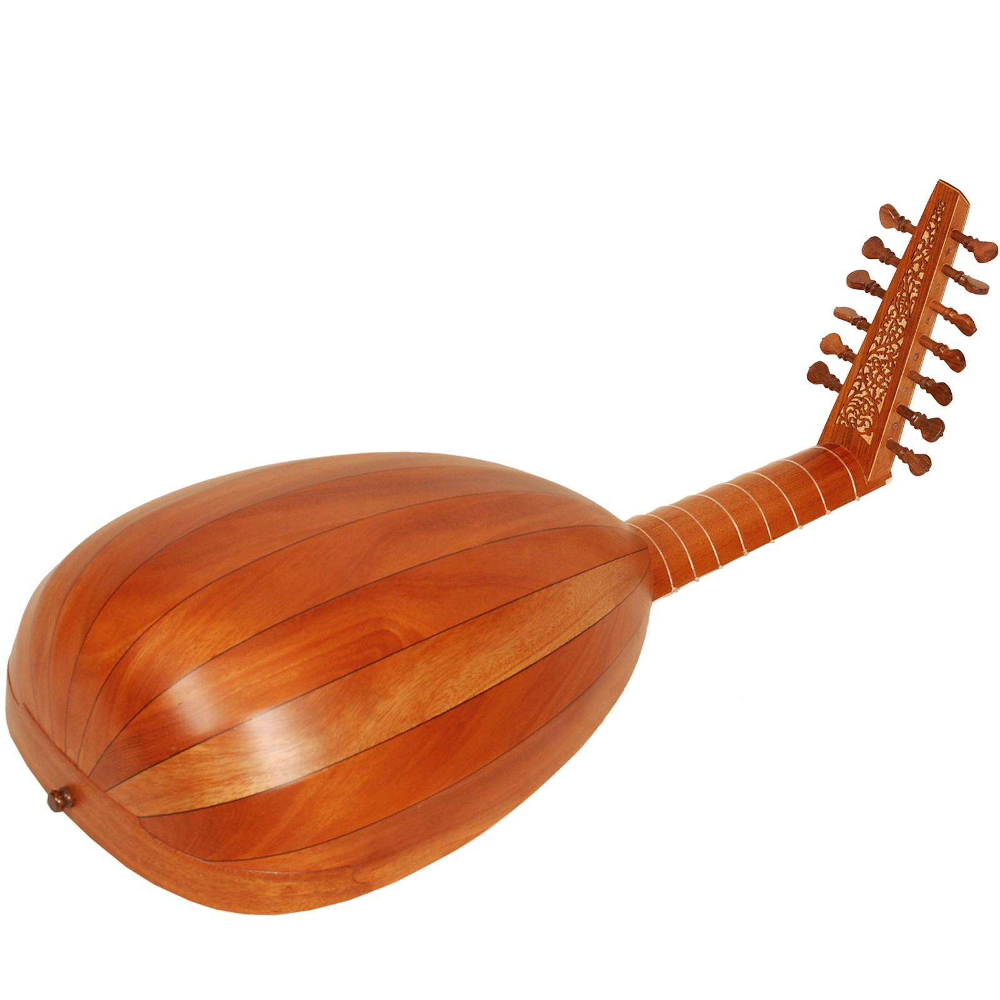
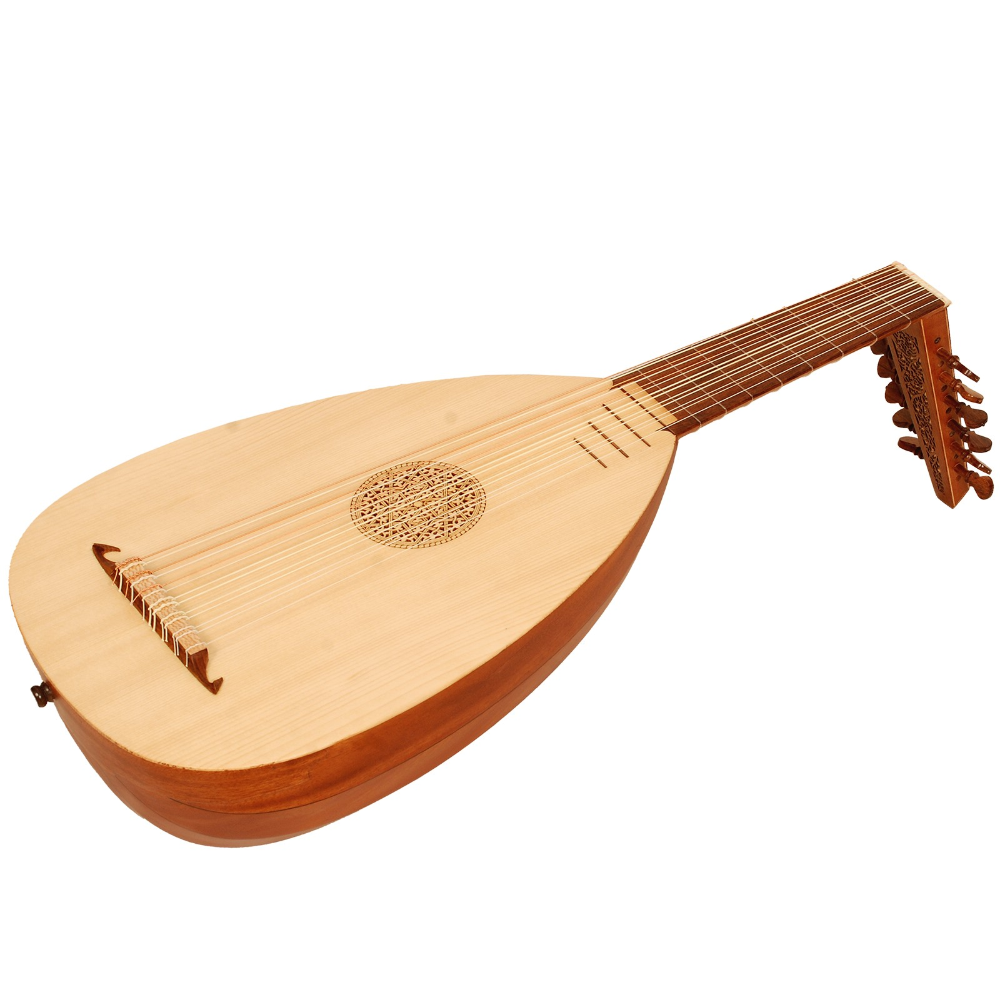
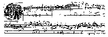

Fidel > Fiddle > Vielle > Vihuela > Viola
DARAUS ERGEBEN SICH:
Violine: die kleine Viola,
Violone: die große Viola > Violoncello: die kleine große Viola
Geige wahrscheinlich von nordisch geiga (= hin und her gehen), altdeutsch gige.
Spitze |
Stange |
Haar |
Frosch |
Spannschraube |
|  |  |
Haftgleiteffektin Schwingung.
Knick, der an der oben gezeichnete Hüllkurve entlang fährt
Der Steg dient zur Straffung der Saite, zur Erhebung der Saiten über das Griffbrett und zur Übertragung des Tons auf den Instrumentenkorpus. Er wird beim Anstreichen der Saite sowohl in Längs- als auch in Querrichtung zu dieser in Schwingung gesetzt. Diese Schwingung werden auf die Decke und von dort aus über den Stimmstock auf den Boden übertragen. Der Korpus kommt somit in Schwingung und verstärkt die ursprungs schwachen Klang der Saite selbst. Besonders verstärkt wird hierbei der Frequenzbereich zwischen 1000 und 3000 Hz.
Richard Strauß (1864 - 1949): Notturno op. 44
höchste Lage — Violine setzt mit fis4 ein
Erich Wolfgang Korngold (1898 - 1959): Ich ging zu Ihm
aus Das Wunder der Heliane
Violine in tiefer Lage
Gustav Mahler (1860 - 1911): Sinfonie Nr. IV / aus dem 2. Satz
Violine solo mit Scordatura: fis2 - h1 - e1 - a
Heinrich Ignaz Franz Biber (1644 - 1704): Mysterien-Sonaten / VII: Geißelung Christi
- Allamanda
Violine solo mit Scordatura: c2 - g1 - f1 - c1
flötenähnlicherKlang mit der entsprechenden Frequenz (n × Grundfrequenz).
| Triller |
| Tremolo |
|
sul ponticello (sul pont.): am Steg
|
sul tasto: am (oder über dem) Griffbrett
|
|
auf dem Steg
|
hinter dem Steg
|
|
battuto: mit der Bogenstange auf die Saite geschlagen
|
tratto: mit der Bogenstange über die Saite gezogen
|
Astor Piazzolla (1921 - 1992): Verano porteno
Überdruck hinter dem Steg
Ángel Villoldo (1861 - 1919): El choclo
Überdruck mit bestimmter Tonhöhe